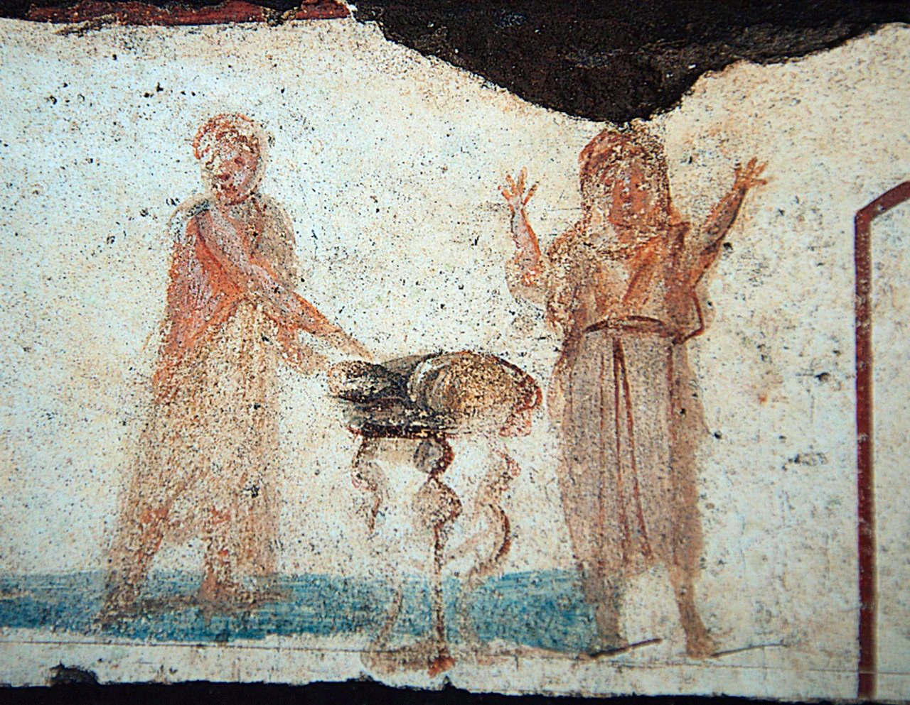
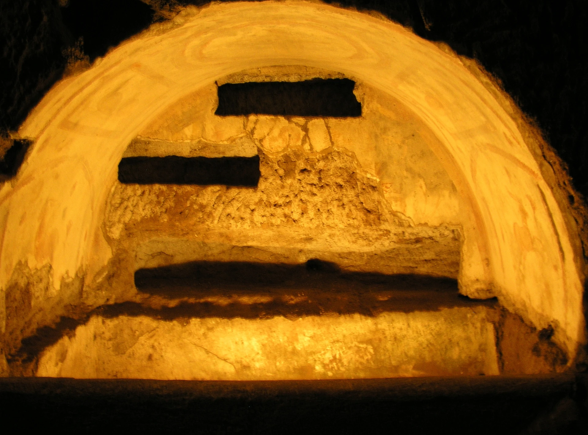
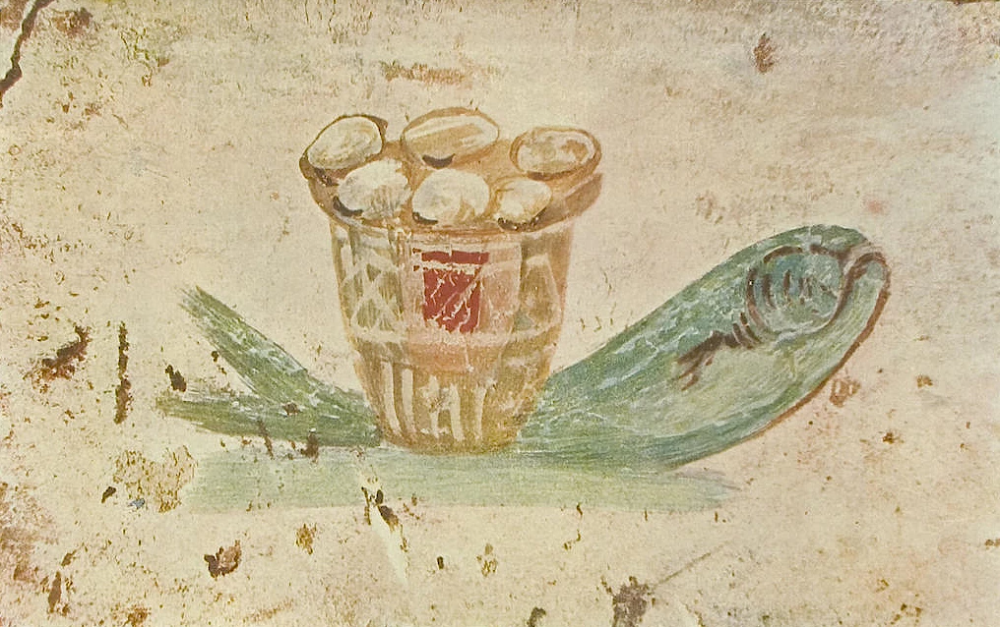
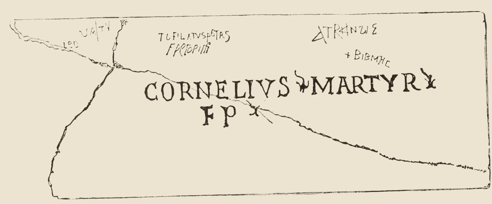
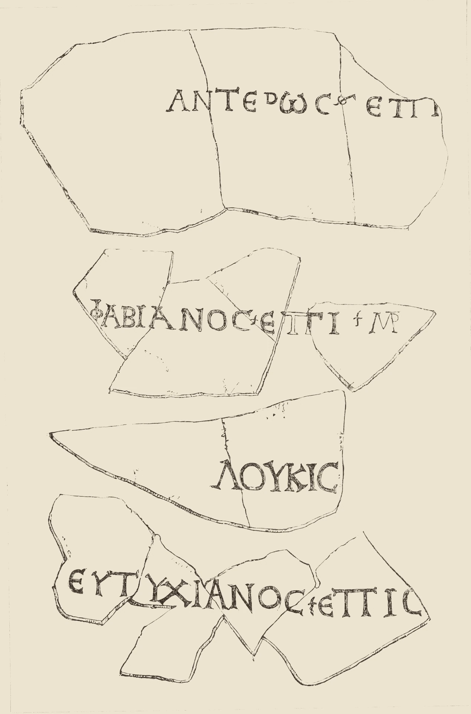
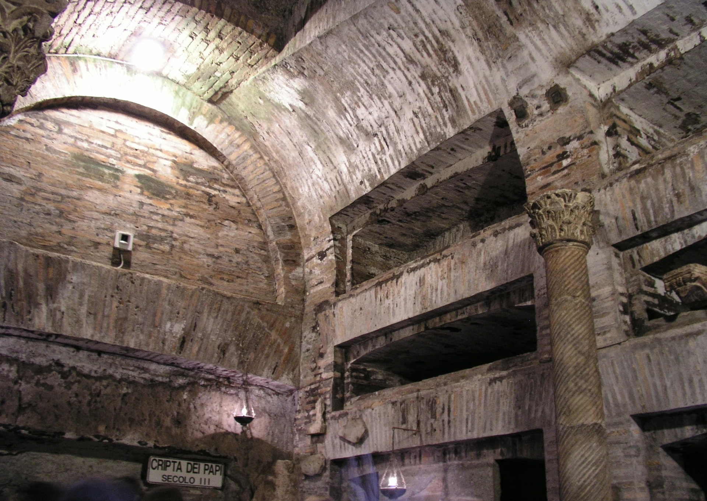

아직 펼치지 않은 카드땅 아래와 하늘 위 · 1산 칼리스토 카타콤로마 옛길 아래 땅속에 20km나 되는 통로가 있어요. 초기 그리스도인들은 그 깊은 곳에 무엇을 남겼을까요?땅속 깊은 곳 벽에 그린 아주 오래된 그림이야!
3세기 · 1849~1854년이탈리아 로마 · 아피아 가도 땅속
산 칼리스토 카타콤
로마 옛길 아피아 가도 아래, 땅속 네 층에 3세기 교황들이 잠든 방이 있어요. 1854년, 흙에 막혀 있던 그 방에 다시 불빛이 닿았어요. 등불을 들고 어둠을 비추며, 깨진 대리석에 남은 이름을 찾아보세요.
땅속 깊은 곳에 옛날 교황님들이 잠든 방이 있대. 깜깜한 방을 등불로 비추면 깨진 돌에서 이름이 나타나!
검수 전 시안이에요(기준서 2판 · 초벌). 장면에는 기록에 있는 것만 옮겼고, 회고로 전해지는 말은 그렇다고 밝혔어요. 상상은 ‘눈 감고 상상해 보기’에만 썼어요.
시안 확인용카드 단계 미리 보기
1
땅속 네 층의 길
로마 남쪽으로 뻗은 옛길 아피아 가도 곁, 땅 밑에 길이 네 층으로 나 있어요. 가장 깊은 곳은 땅속 20m가 넘고, 길을 모두 이으면 약 20km예요.
이곳은 그리스도인들의 땅속 공동묘지, 카타콤이에요. 길 양쪽 벽에는 시신을 눕히던 칸(로쿨루스)이 선반처럼 층층이 파여 있어요.

2세기 중반에 시작된 이 묘지는 3세기에 로마 교회의 공식 묘지가 되었어요. 3세기 초 교황 제피리노가 부제 칼리스토에게 이곳을 맡겼어요. 부제는 교회의 살림과 가난한 이를 돌보던 일꾼이에요. 묘지의 이름이 여기서 나왔어요.
땅속에 길이 네 층이나 있대. 벽에 칸칸이 선반 같은 무덤이 있어.
물어보기깜깜한 땅속 길을 걸으려면 무엇이 꼭 있어야 할까?
2
어둠 속에 그린 빵
‘교황들의 묘실’ 가까이에 ‘성사의 방’이라 불리는 작은 방 다섯 개가 있어요. 3세기 초에 가족들이 함께 쓰던 무덤 방이에요.
벽에는 세례와 성찬을 떠올리게 하는 그림이 있어요. 세례와 성찬은 교회가 하는 거룩한 예식이에요. 왼쪽 그림에서 한 사람은 세 다리 탁자 위의 빵과 물고기에 손을 뻗고, 곁의 사람은 두 팔을 들어 기도해요.

오른쪽은 이웃한 ‘루치나의 묘실’ 벽화를 1903년 화첩에 옮겨 실은 것이에요. 물고기가 빵 바구니를 지고 있어요. 이 방들에는 큰 물고기에게 삼켜졌다가 살아 나온 요나도 그려져 있어요. 그리스도인들은 요나를 부활의 표로 읽었어요.
빵이랑 물고기 그림이야. 두 팔을 들고 기도하는 사람도 있어.
물어보기깜깜한 무덤 방 벽에 왜 빵을 그렸을까?
3
깨진 돌 한 조각
1849년, 젊은 학자 조반니 바티스타 데 로시(Giovanni Battista de Rossi)가 아피아 가도의 한 포도밭에서 깨진 대리석 조각을 보았어요. 조각에는 ‘…NELIUS MARTYR’라는 라틴 글자가 남아 있었어요. ‘…넬리우스 순교자’라는 뜻이에요. 순교자는 믿음 때문에 목숨을 잃은 사람이에요.
그런 이름의 순교자는 없었어요. 데 로시는 앞 글자가 떨어져 나간 ‘코르넬리우스’, 곧 253년에 세상을 떠난 교황 코르넬리오라고 보았어요. 옛 순례 안내서가 코르넬리오의 무덤이 칼리스토 묘지 가까이에 있다고 적었기 때문이에요.

교황 비오 9세가 그 포도밭을 사들였고, 땅을 파기 시작했어요. 1853년, 데 로시는 땅속 무덤 방에서 그 묘비의 나머지 조각을 찾아냈어요. 맞춰 보니 ‘코르넬리오 순교자 주교’였어요. 다른 교황들의 묘비는 그리스어인데, 코르넬리오의 묘비는 라틴어예요.
깨진 돌 조각에 ‘넬리우스’라고 쓰여 있었대. 앞 글자는 어디 갔을까?
물어보기돌 조각 하나로 숨은 무덤을 찾을 수 있을까?
4
교황들의 묘실
1854년, 데 로시는 또 하나의 방을 찾았어요. 방은 천장의 빛 구멍(루미나레)까지 흙과 쓰레기로 꽉 차 있었어요. 루미나레는 땅 위에서 빛과 바람이 들어오도록 뚫은 구멍이에요. 몇백 년 동안 그 구멍으로 흙이 쏟아져 들어갔어요.
좁은 틈으로 흙더미를 걷어 내는 동안, 깨진 대리석 조각들이 데 로시의 눈앞을 지나갔어요. 그는 거기서 3세기 교황들의 이름을 읽어 냈어요. 등불을 들고 그 조각들을 비춰 보세요.
손가락이나 마우스로 문질러 등불을 비춰 보세요. 깨진 대리석 네 장에서 교황의 이름을 찾아보세요.

교황들의 묘실에서 나온 깨진 묘비 넷 — 그리자르, 『중세 로마와 교황의 역사』(1898)의 그림 부분만 잘라 바탕을 밝게 손봄 · 퍼블릭 도메인 · 위키미디어 공용
빛이 닿으면 숨은 표시가 나타나요.
네 이름을 모두 찾았어요. 오래 흙에 묻혀 있던 이름들이 등불 아래 다시 읽혔어요.
이 방에는 3세기 교황 아홉 분이 묻혔고, 로마 교회의 지도자 여덟 분도 함께 묻혔을 것으로 봐요. 데 로시는 이 방을 ‘작은 바티칸’이라고 불렀어요. 지금도 벽에는 깨진 채로 남은 다섯 교황의 그리스어 묘비가 있어요.
깜깜한 방을 등불로 비춰 봐. 깨진 돌에 옛날 교황님 이름이 숨어 있어!
물어보기돌이 몇 조각으로 깨졌는지 세어 볼까?
5
1854년 5월 11일
1854년 5월 11일, 교황 비오 9세가 이 묘실로 내려왔어요. 데 로시의 회고에 따르면, 교황은 묘비의 이름을 읽고 “그러니까 이것이 정말 베드로의 첫 후계자들, 여기 잠든 내 앞선 이들의 무덤이란 말이오?” 하고 물었어요(이 안내서가 옮김). 그리고 눈물을 글썽이며 무릎을 꿇고 기도했다고 해요.
데 로시는 이 방에서 4세기의 다마소 교황이 바친 대리석 비문의 조각들도 찾아냈어요. 백 조각 넘게 깨진 비문은 다시 맞춰졌고, 없어진 글자는 다른 색으로 채웠어요. 그 비문은 이렇게 끝나요.

“고백하건대 나 다마소도 여기에 내 몸을 묻고 싶었소. 그러나 거룩한 이들의 재를 어지럽힐까 두려웠소.”
다마소 교황(366~384년 재위)이 교황들의 묘실에 새긴 비문의 마지막 두 줄 · 라틴어를 이 안내서가 우리말로 옮김
옛날 교황님이 돌에 적힌 이름을 읽고 눈물을 흘렸대.
물어보기내 이름을 1,600년 뒤에 누가 읽는다면 어떤 마음일까?
눈 감고 상상해 보기
작은 등잔 하나를 들고 좁은 계단을 내려가요. 서늘한 흙냄새, 발소리가 벽에 부딪혀 돌아와요. 불빛이 닿는 곳마다 벽의 칸들이 하나씩 드러나요. 흙더미 사이에서 하얀 대리석 조각이 보이고, 그 위에 그리스 글자 몇 개가 떠올라요.
눈을 감아 봐. 작은 등불을 들고 땅속 계단을 내려가. 똑, 똑, 발소리가 울려. 불빛이 닿자 하얀 돌에 글자가 보여!
나의 자리
흙 속에 묻혀 있던 이름들이 등불 아래 다시 읽혔어요. 내가 오래 기억하고 불러 주고 싶은 이름은 누구인가요?
깜깜한 데서 찾은 이름처럼, 너는 누구 이름을 오래오래 기억하고 싶어?
마음에 닿는 한 줄을 고르거나 직접 써 보세요. 한 줄을 남기면 이 자리의 도장이 찍혀요. 이 기기에만 저장돼요.
더 깊이
궁금한 칸만 펼쳐 읽어도 괜찮아요.
기록마다 다른 점
첫 조각을 본 곳 ‘…NELIUS MARTYR’ 조각을 두고, 옥스퍼드 대학의 ‘성인 숭배’ 자료는 포도밭의 집 가까운 땅에 놓여 있었다고 적고, 『내셔널 가톨릭 레지스터』의 글은 포도밭 지하실이었다고 적어요. 해도 대부분 1849년이지만, 1848년이라 적은 기록도 있어요(그 자료는 잘못 적은 것으로 봐요).
이 방에 묻힌 교황 공식 누리집은 교황 아홉 분이 묻혔고, 지금 벽에 원래 묘비가 남은 분은 폰티아노, 안테로스, 파비아노, 루치오, 에우티키아노 다섯 분이라고 해요. 1892년 고고학자 란차니는 이 방에서 이름이 확인된 주교로 우르바노, 안테로스, 파비아노, 루치오, 에우티키아노를 꼽았어요.
비오 9세의 말 교황의 물음은 데 로시가 남긴 회고로 전해져요. 이 카드는 그 회고를 옮겨 실은 글(『30Days』 1996년, 『내셔널 가톨릭 레지스터』 2017년)을 따랐어요.
함께 읽는 말씀
말씀은 뜻만 옮기고, 본문은 대한성서공회 개역개정으로 이어 드려요.
요나 1장 17절~2장 10절 요나는 큰 물고기 배 속에서 사흘 밤낮을 지냈고, 물고기가 토해 내어 땅으로 나왔어요. 카타콤의 그림에서 요나는 다시 살아남을 바라는 표로 그려졌어요.
마가복음 6장 41절 예수가 빵 다섯 개와 물고기 두 마리를 들고 축복한 뒤 떼어 나누어 주었어요. 빵과 물고기 그림은 이 이야기와 성찬을 함께 떠올리게 해요.
직접 가 보기
확인한 날 · 2026년 11월 22일 · 바뀌기 쉬운 정보라 정기적으로 다시 확인해요
로마 아피아 안티카 가도 110번지에 있어요. 두 사람 이상이 함께, 안내원을 따라서만 들어갈 수 있어요. 안내는 30분마다 출발하고 40분쯤 걸려요.
월·화·목·금·토·일 9:00~12:00, 14:00~17:00에 열고 수요일은 쉬어요. 1월 1일과 12월 25일, 2027년 부활절(3월 28일), 2027년 1월 13일~2월 10일과 8월 11~18일에도 쉬어요. 공식 누리집에서 예약할 수 있어요.
네 이름 찾기 금박
등불로 묘비 조각을 비춰 교황 네 분의 이름을 모두 찾으면 카드에 금박이 입혀져요.
묘비 조각을 비춰 네 이름을 모두 찾기
아이와 함께 채색
아이와 함께 ‘영화처럼 보기’를 끝까지 보면 카드가 채색돼요.
아이와 함께 ‘영화처럼 보기’를 끝까지 보기
근거 보기 (12)
- 산 칼리스토 카타콤 공식 누리집 — 넓이와 네 층·20km·20m 넘는 깊이, 2세기 중반 시작, 제피리노와 부제 칼리스토, 3세기 공식 묘지, 성사의 방 다섯(3세기 초, 세례·성찬·요나)
- 산 칼리스토 카타콤 공식 누리집: 교황들의 묘실 — 교황 아홉과 지도자 여덟쯤, ‘작은 바티칸’, 그리스어 묘비 다섯(폰티아노·안테로스·파비아노·루치오·에우티키아노), ‘주교’ 넷·‘순교자’(MPT) 둘
- 산 칼리스토 카타콤 공식 누리집: 시간 — 여는 때, 수요일·휴관일, 30분마다 40분 안내
- 노스코트, 『로마 카타콤 방문기』(1891, 프로젝트 구텐베르크) — 1854년 다시 찾은 묘실, 빛 구멍으로 쏟아져 든 흙, 다마소 비문이 백 조각 넘게 깨졌고 없는 글자는 다른 색으로 채움, 순교자 무덤 앞의 등잔, 성사의 방과 빵 바구니를 진 물고기
- 란차니, 『이교와 그리스도교의 로마』(1892, 프로젝트 구텐베르크) — 흙더미를 걷어 낼 때 깨진 대리석에서 안테로스·파비아노·루치오·에우티키아노의 이름을 읽어 냄
- 옥스퍼드 대학 ‘성인 숭배’ 자료 E04644 — 1849년 포도밭에서 ‘nelius martyr’ 조각, 1853년 나머지 조각을 무덤 방에서 찾음
- 가톨릭 백과사전 「교황 코르넬리오」(1908) — 코르넬리오의 묘비는 라틴어, 파비아노·루치오는 그리스어
- 『내셔널 가톨릭 레지스터』, 2017년 11월 22일 — 포도밭의 깨진 묘비, 7세기 순례 안내서, 비오 9세가 포도밭을 삼, 1854년 5월 11일 방문과 데 로시의 회고
- 스테파니아 팔라스카, 「첫 증인들의 소박한 빛」(『30Days』 1996년 4호, EWTN 게재) — 5월 11일 방문, 교황의 물음, 눈물과 기도
- 가톨릭 백과사전 「거룩한 고고학 위원회」(1908) — 1849년 아피아 가도 포도밭의 ‘NELIVS MARTYR’ 조각, 비오 9세에게 포도밭을 사 달라고 청함
- IntraText: 다마소의 비문(Epigrammata XI) 라틴어 본문 — ‘hic fateor Damasus volui mea condere membra, sed cineres timui sanctos vexare piorum’
- 교황청: 역대 교황 — 안테로스 235~236, 파비아노 236~250, 코르넬리오 251~253, 루치오 253~254, 에우티키아노 275~283, 다마소 366~384, 비오 9세 1846~1878
그림·사진·소리 출처
‘처음 만나는 기독교 문화’의 깊은 카드예요. 실제 인물의 사진은 쓰지 않았어요. 카드 단계와 남긴 글은 이 기기에만 저장돼요.